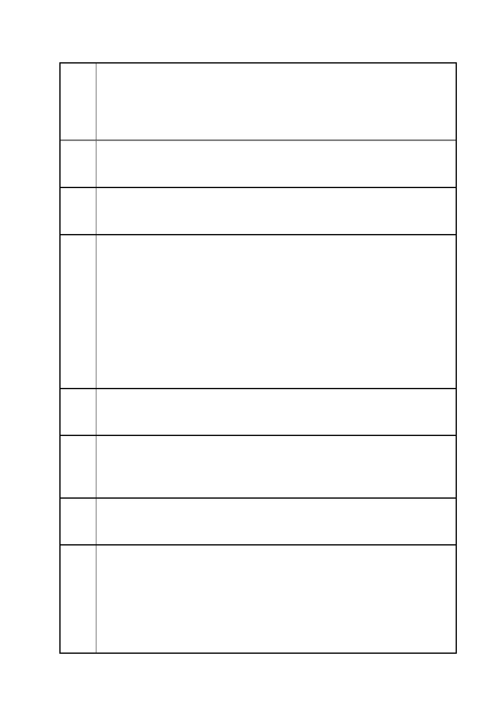

臺北市都市計畫委員會 公民或團體陳情意見綜理表
案
名
建議
辦法
三
陳情
理由
四
建議
辦法
四
陳情
理由
五
建議
辦法
五
陳情
理由
六
「變更臺北市信義區逸仙段二小段 33 地號等 21 筆土地（原臺北機廠）
工業區為創意文化專用區、特定專用區、道路及綠地用地主要計畫案」
及「擬定臺北市信義區逸仙段二小段 33 地號等 21 筆土地（原臺北機
廠）創意文化專用區、特定專用區、道路及綠地用地細部計畫暨劃定
都市更新地區計畫案」
的商業與文創地帶，台北機廠的再生主要在處理都市空間的開放與聯
繫，周邊商圈早成。美術館分館的設置做為都市再生的策略性利器，
應該發揮在更有需要的地方。
確立以籌設鐵道博物館優先的規劃，才是保護鐵道文化資產的最好方
式。美術館用地應另謀他處。
4.回饋土地與開放空間集中設置，並捐助鐵道博物館基金
基於土地變更而將獲致重大開發利益的原地主台鐵..等，建議應比照
過去北側京華城的變更經驗，一方面捐地供公益使用，另一方面提撥
相當基金做為籌設鐵道博物館之籌備。以目前「細部計畫書」第 15
頁(表四)的捐贈面積綜理表，捐地的比例共佔約 40.5%來看，4.4193
公頃的「創意文化專用區」僅佔 26.45%，(表四)道路與綠地所佔面積
與百分比資訊矛盾不詳。
且道路與綠地劃設範圍分散在各更新發還的土地周邊，意即為原地主
亦能共享的都市空間，回饋園區核心的貢獻度不夠大，故建議整體捐
地比例應再調整並集中劃設，或是採取博物館籌設基金補充代替之。
請修正「細部計畫書」第 15 頁表四的捐贈面積綜理表。
增加捐地回饋比例，或要求原地主台鐵局提撥台北機廠鐵道博物館設
置基金做為回饋之一部分。
5.園區內通路請再詳加考量、勿破壞文化資產設施
公開展覽「細部計畫書」第 31 頁附圖 5 所示，繪有基地內設有 20
公尺基地內通路的斷面設計。所設的車道與裝卸區位置恐有破壞原址
的歷史建築「露天吊車」之虞。
建議應將原址之「露天吊車」套繪並重新設計，以保留吊車與建物原
有關係為佳，避免新設車道與大客車裝卸區破壞既有文資紋理。並於
都市設計準則中增列相關注意要點，以免誤導。
6.變更後之綠地等空間請再檢討增設
依據內政部九十一年六月十三日台內營字第○九一○○八四二七九－
一號令訂定《都市計畫細部計畫審議原則》第十一條第(四)款規定:
「主要計畫變更土地使用分區規模達一公頃以上地區，應劃設不低於
該等地區總面積百分之十之公園、綠地、廣場、體育場所、兒童遊樂
場用地。」按目前「細部計畫書」第 13 頁表一所示，此部分用地統
計僅呈現「綠地」一項，面積計 1056 平方公尺，僅佔 0.62%，遠低
第 81 頁/共 154 頁